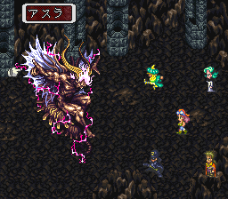

- 동굴사원적의 보스를 격파
- 아수라
- 보스 데이터
동굴사원적의 보스를 격파
- 산적의 소굴을 턴다 클리어 이후 스탠리의 민가에 있는 주민(할머니)과 대화해서 산적의 소굴에 몬스터가 출현한다는 정보를 얻는다.
- 산적의 소굴이 몬스터의 소굴이 된 이후, 내부에 들어가서 고정 몬스터를 격파한다.
- 지역 맵에 동굴사원적(洞窟寺院跡)이 출현한다.
- 마왕전의 지하의 워프 포인트 왼쪽 방에서 죽음의 기도(死の祈り)를 알아낸다. 마왕전의 어비스 게이트를 닫는다를 참고하자.
- 동굴사원적의 끝에서 기둥을 조사하면 선택사항이 나온다. '죽음의 기도'선택하고, <가라테아>를 쓰러뜨리면 이벤트 종료.
아수라

아수라는 악마계 몬스터 최상위 랭크. 아수라(アスラ)를 말한다. 아수라는 동굴사원적의 중간 부분에 길을 막고 있는 악마계 고정 몬스터로 출현하고 있다.
- 아수라와 전투를 하면 랭크가 높기 때문에 높은 확률로 기술을 번뜩일 수 있다. (기술을 가르쳐주는 아수라 선생님~)
- 아수라가 출현하지 않을 때는 총 전투 횟수를 늘리고, 파티가 약한 경우도 나오지 않으므로 HP를 700이상 만들어두는 준비가 필요하다.
- 아수라를 쓰러뜨리고 맵을 전환하면 다시 출현하고 있다. 무한 반복으로 많은 기술을 번뜩이자.
- 동굴사원적의 보스를 쓰러뜨리면 출현하지 않는다.
보스 데이터
| 명칭 |
HP |
입수 자금 |
입수 아이템 |
| ガラテア |
13000 |
0 |
死のかけら |
지상이 '백호'일 경우 매턴 999회복하므로 주의.
석화 공격을 해오니 석화 회복 대책도 마련하자.
곤봉 기술 중 삭암격(削岩撃)이 유효하다.